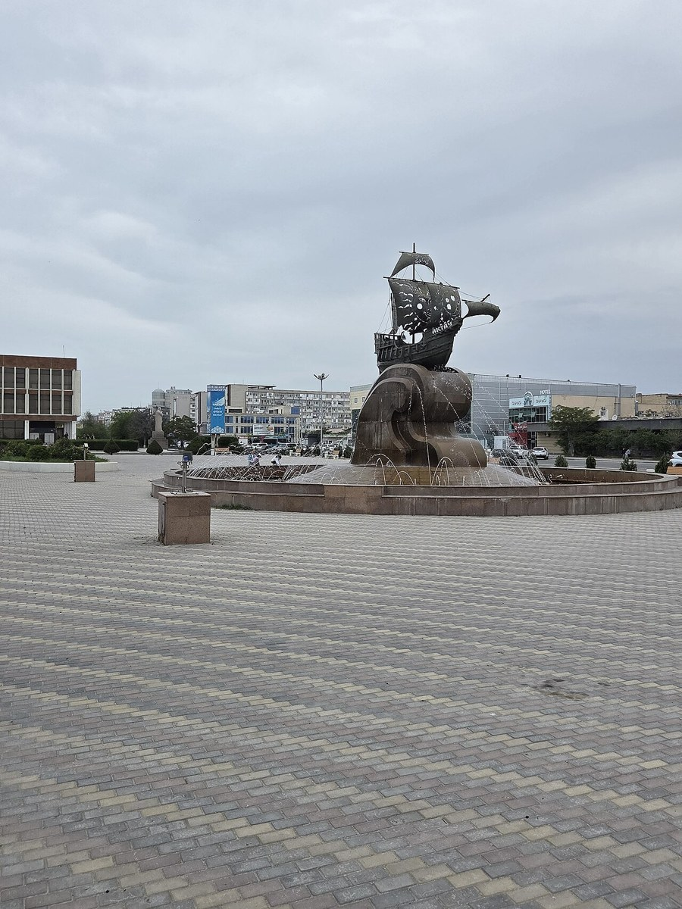
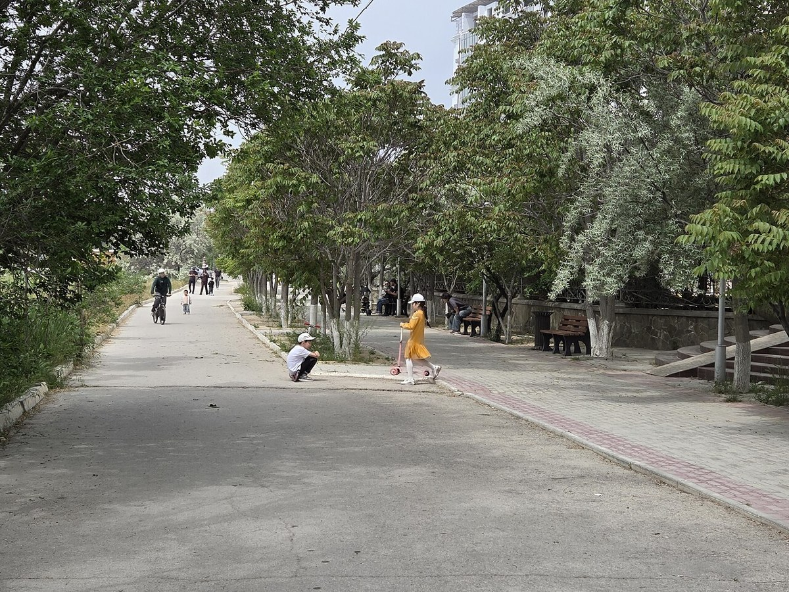
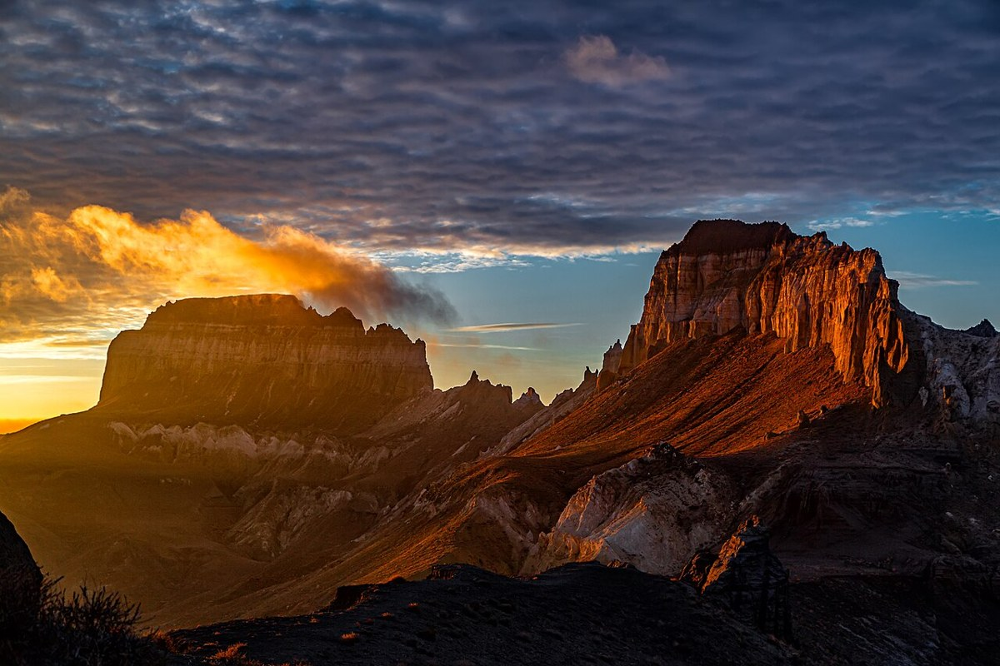
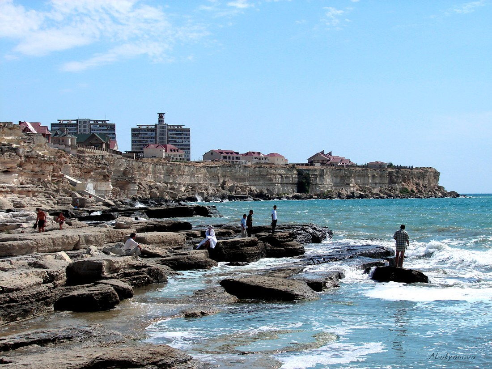
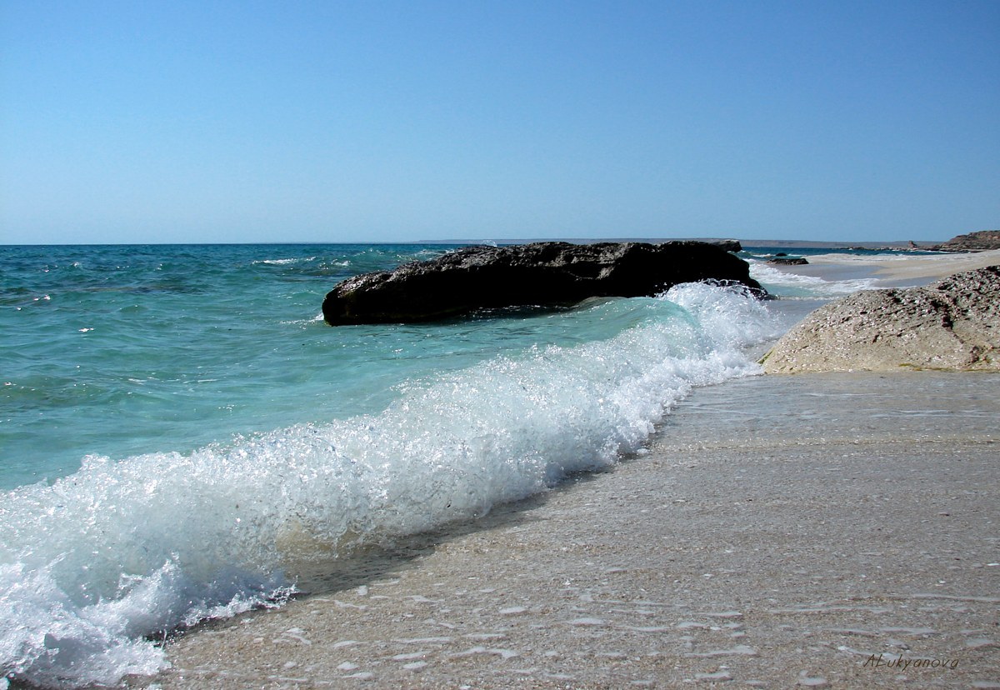

Task 3 · Grid System
Aktau & Mangystau
Nine photographs of my home region in Kazakhstan. Hover over or focus an image to see its caption.









Task 3 · Grid System
Nine photographs of my home region in Kazakhstan. Hover over or focus an image to see its caption.




